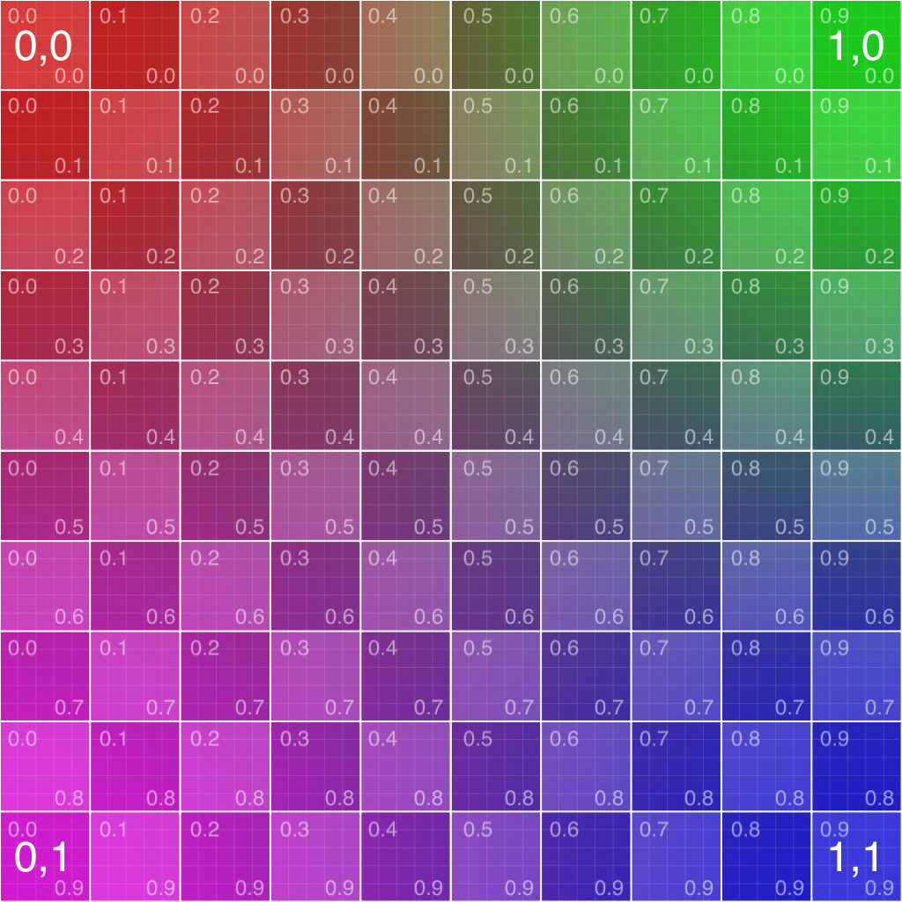

Image Based Rendering of Micmac datasets
You can open Micmac files here using drag and drop or here
- Images: {name}.jpg files
- Orientations: Orientation-{name}.{ext}.xml (orientations and images are matched by name)
- Intrinsics: AutoCal*.xml (must be drag-and-dropped jointly with orientations that share its intrinsics)
- PointClouds: *.ply (eg the AperiCloud)
The scene is colored by the intrinsic colors of the pointcloud, replaced by the unprojection of the image
from the current texture camera. The scene is composed of :
- a large view-centered sphere (500m)
- an horizontal plane at a given absolute altitude
- the loaded point clouds if any.
 An orientation with no image loaded shows this calibration texture by
default.
Keyboard Actions :
- ↓/↑: move the view camera to the previous/next image
- ←/→: move the texture camera to the previous/next image
- PageDown/PageUp: move both the texture and the view cameras to the previous/next image
- t: set the texture camera to the current view camera
- v: set the view camera to the current texture camera
- -/+: decrease/increase the point size
- c: print the current camera in the console
- p: print the current camera position in the console
- h: show/hide the GUI
Mathieu Brédif (
IGN ENSG, Lastig/Geovis, Univ. Paris
Est,
github)